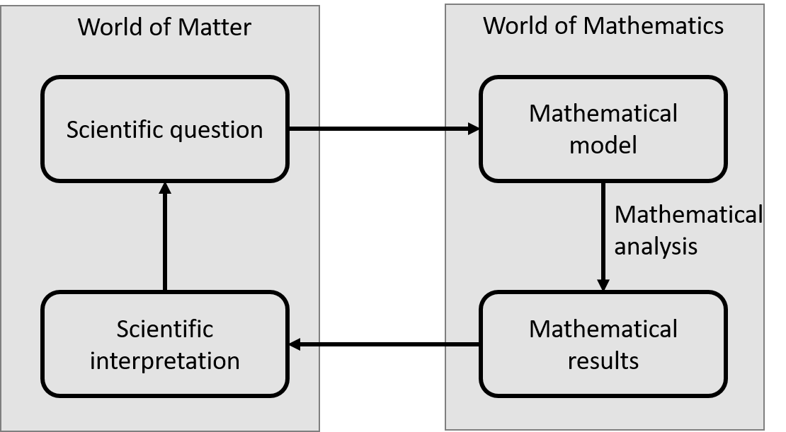

Lecture 1. The concept of mathematical modelling#
‘All models are wrong but some are useful.’ - George Box
‘All models are wrong but some are in this course.’ - adapted from Alica Ackles
1.1 What is a model?#
A perfectly reasonable question for you to ask when you look at your timetable is ‘What is a mathematical model?’ Think about what it means to build a model airplane or model village. We are taking something large, complicated and unwieldy and reducing it down to something much smaller and simpler. It still retains the essence of the thing we’re interested in, but we can play with it, experiment with it, and even see how to break it.
The same idea is true of a mathematical model. The universe is a complex thing, and a central pillar of science is trying to understand various aspects of it. Mathematical modelling is very much a part of that toolkit, allowing us to answer questions about the aerodynamics of a new vehicle, how far a ball will travel when hit, the most effective dose of a drug to precscribe to a patient, whether an asteroid will enter Earth’s atmosphere, and a gerat many questions besides.
Just like a model airplane, the level of detail will vary depending on our question and how much time and expertise we have at our disposal. A simple paper dart takes the rough shape of a plane and will glide for a small while, but has very little detail. A plastic model starts to look more like a real plane and - if you’re brave enough to throw it - will also glide, but it has no locomotion. A radio-controlled plane starts getting us much close to the real thing, though it’s inner workings are decidedly different from a jet engine.
When we work with models, we must always remember that that is exactly what they are, and recognise the assumptions and simplifications we have made. What might be missing? Is it important? This leads us to thinking about the modelling process as being a cycle.
1.2 The modelling cycle#
Mathematical modelling is as much an art as a science. There is no perfect way of modelling a physical system . Therefore many modellers talk of a ‘modelling cycle’ of iterative model improvements towards answering a specific scientific question (Figure 2).
The starting point of this process is to formulate a scientific question. There is no point in building a model unless you have an idea of what you want to achieve by building the model. Remember that. Furthermore, the scientific question will inform what needs to go into the mathematical model. For example, if your question is ‘how will a population of single-celled organisms on a petri dish change over time’, this immediately tells you you need to model the number of organisms at any point in time, which we might call \(U(t)\) ( \(t\) is time). You will also need to account for the birth rate, \(a\), and death rate, \(d\), of organisms. However, there are some things that you will probably not need in the model, such as details of the internal workings of each organism, the height of the petri dish above sea level, the phase of the moon, or the weight of the table on which the petri dish sits.
Exercise
Consider this petri dish example and write down ideas of further details it might be relevant to include.
Once you have decided what things you need for answering your scientific question, you then build your mathematical model (Figure 2). This model should aim at translating your scientific question into a mathematical question. This in itself is a big challenge. How do we decide what to include? What mathematical formulations are appropriate? For much of this course I will be guiding you through these questions, demonstrating to you how to think about constructing about a model and standrad ways in which things tend to be done. My hope is that you can absorb these ideas so that you can not only repeat the things I have shown you, but start applying them to new examples. Deciding on assumptions is not an easy thing to get right, and this is one of the key reasons why modelling can end up being an iterative process of gradual improvement.
Figure 2: The modelling cycle.
Having built your model, you are in a position to analyse your model using whatever mathematical tools you have at your disposal (you don’t have many now, but by the end of this module you’ll have several; by the end of your degree, with the right module choices, you’ll have loads). Then, once you have completed your mathematical analysis, you can translate your results back into scientific language. This step is often called ‘model interpretation’ or ‘scientific interpretation’. Then you can go back to your original question and see the extent to which you have answered it. Typically, you will find that you have answered the question to some extent, but not completely. So you can then improve your model, to get at the parts of the question that you have not managed to answer, and start the process again (Figure 2).
We will see several examples of this kind of iterative model improvement throughout the module. But before we go this far, let’s spend some time looking at some examples of the first two steps: constructing a scientific question and building a mathematical model to answer it.
1.3 Examples of model construction#
Example 1 (The pirate.)
Suppose you are a pirate, firing a cannon from your ship towards a merchant sailor’s ship. The cannon fires balls at a fixed speed and you know how far away the other ship is.
Example 2 (Population growth.)
Suppose ten rabbits (five male, five female) are introduced to an island full of lush vegetation and free of predators.
Note
We are assuming that half the rabbits are female at any point in time. Can you see why? Also, if \(a>d\) this model may be good for small \(N\), but will eventually become unrealistic. We will show this in Lecture 2, and how to remedy this fact.
Example 3 (Competing animals.)
Here’s a more complicated example. I will leave you to think about the assumptions made here, with the caveat that many of them are not obvious. Do not worry of you do not fully understand this example now! Over the course of time, you will get there. But it is worth having a think about, even now.
Suppose we have two animal populations, \(A\) and \(B\), that each eat the same food, so compete with one another for that food.
Scientific question.#
At what angle do you need to point the cannon when firing it, in order to hit the other ship?
Required quantities.#
Speed of exit from cannon, \(u\); angle of exit from cannon, \(\theta\); acceleration due to gravity, \(g\); distance between ships, \(L\); horizontal speed of ball, \(v_{x}(t)\); vertical speed of ball, \(v_{y}(t)\); location of ball, anything else?
Assumptions.#
Air resistance and wind are negligible, cannon ball does not hit a bird (or UFO) in transit, anything else?
Model.#
We will look in detail at modelling trajectories of such objects in Lecture 18 and following. I’ll save the maths for then.
Scientific question.#
How many rabbits will there be in \(N\) years time?
Required quantities.#
Number of rabbits, \(U(t)\); birth rate of rabbits, \(a\); natural death rate of rabbits, \(d\).
Assumptions.#
Sufficient vegetation so that competition for resources is negligible, no predation, anything else?
Model.#
Let \(U(t)\) be the number of rabbits in year \(t\). Suppose that each year each female gives birth to an average of \(2 a>0\) rabbits. Suppose that a proportion \(d \in[0,1]\) of the rabbit population dies each year. Then we can model this as
Scientific question.#
Do we have coexistence between the two populations, or does one end up dominating?
Required quantities.#
Number of animals in population \(A\), Number of animals in population \(B\), their birth and death rates, the effect of competition between \(A\) and \(B\) on the death rates of each (called interspecific competition), the effect of competition between individuals of the same population (called intraspecific competition).
Model.#
Let \(U(t)\) and \(V(t)\) be, respectively, the number of animals in populations \(A\) and \(B\) at time \(t\). One classical model for this is given by the following differential equations
Here, \(a\) and \(\alpha\) are the net reproductive rates (i.e. birth rate minus death rate) of populations \(A\) and \(B\), respectively; \(b\) and \(\beta\) denote intraspecific competition of populations \(A\) and \(B\), respectively; \(c\) and \(\gamma\) denote interspecific competition of populations \(A\) and \(B\), respectively.
Exercises#
Exercise 1
Think about the following scientific questions and how you might build a mathematical model to help answer them. Try to write down the required quantities that need to go into the model and the modelling assumptions. Note that these are not simple examples and there is no single correct answer, but this question is just to get you thinking. So have a go and don’t worry if you are not sure what you write is correct! I’m happy to discuss your ideas if you want: use the Discussion Board or come ot my student hours.
(a) Given a scenario where the average world’s temperature will increase by \(x\) degrees centigrade in the next 50 years, how much will the average global sea level rise?
(b) Every year, mule deer in the Greater Yellowstone Area of North America migrate so that they can find the best vegetation to eat. Suppose that you have knowledge of the distribution of vegetation at each day of the year. What day (or days) will the mule deer decide to migrate and what will be their movement trajectory?
(c) A funny video is posted on a social media platform. What proportion of users end up viewing the video?
Exercise 2
This follows from Example 2 above (population growth of rabbits).
(a) Set \(d=0.3\) and \(a=0.8\) in Equation 1. Suppose \(U(0)=10\). Calculate \(U(t)\) for \(t=1,2,3, \ldots, 10\) and plot a graph of \(U(t)\) against \(t\).
(b) Now set \(d=0.8\) and \(a=0.3\). Then re-calculate \(U(t)\) for \(t=1,2,3, \ldots, 10\) and plot a graph of \(U(t)\) against \(t\).
(c) What is the main difference between the graphs in parts (a) and (b)?
(d) [Hard-ish] Find a general relationship between \(a\) and \(d\) that ensures the rabbit population does not die out. You may want to begin by experimenting with keeping \(a\) constant and varying \(d\).